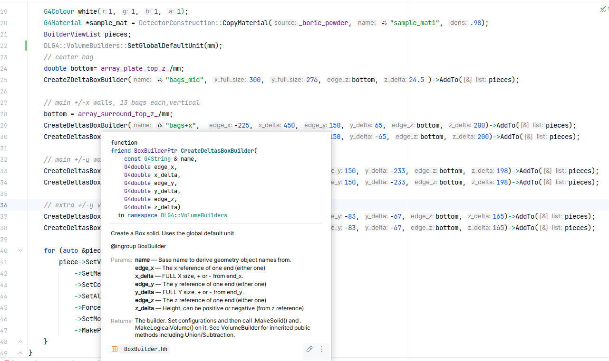
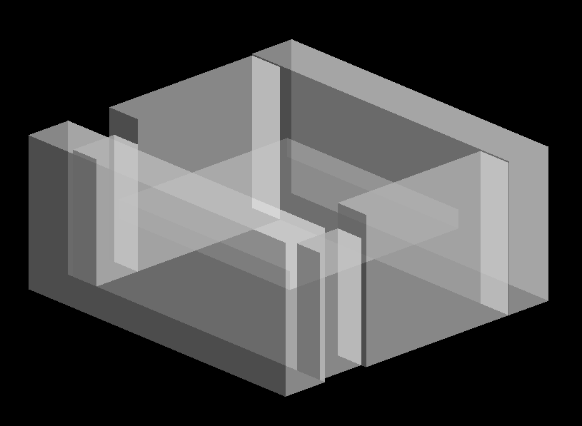
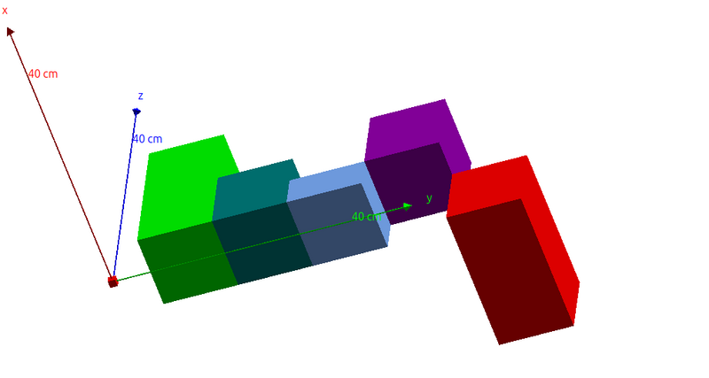
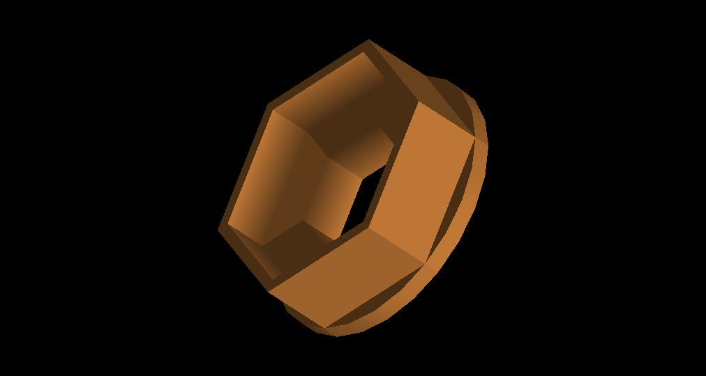
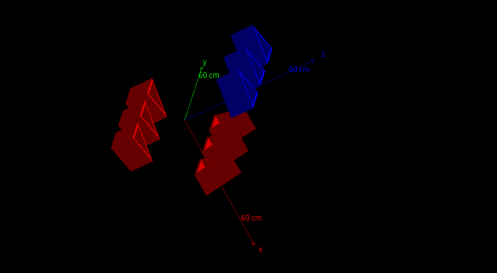

|
DLG4::VolumeBuilders
A fluent interface for Geant4 geometry definition.
|
README for VolumeBuilders code (and readme) Copyright Doug Leonard 2025, All rights reserved.
Distributed under MIT (Expat) license.
Related Links:
VolumeBuilders is a modernized fluent-style (ie chained) builder system for simplified and streamlined definition of Geant4 geometries, aimed at simplifying geometry definition and removing code noise to focus on configuration, with a result of easier definition and review and fewer bugs. As a bonus, it allows easy definition of assemblies containing other assemblies and volumes, treating both in the same way, simply as objects to be configured (visibility etc) or placed.
Some benefits/features include:
Code Note: -Polymorphic fluent systems in C++ are notoriously challenging to write, and this was no exception, but they are famously pleasant to use. A novel C#-like method is discussed at the bottom.
A quick but trivial example.... Here is snippet of a typical world volume setup:
In VolumeBuilder we default rotation, position, mother in this case, implicitly build the logical volume, and skip all the temporaries variables, easing review and reducing typos:
Well, that's cute, but too simple. Let's size and position a few boxes.
Here's a clean example from a real simulated sample.
Here is a (possibly older) version of the same code opened in Clion using included configuration with live method documentation and with parameter hinting toggled on (double tap and hold cntrl in my key bindings):

And here is the geometry it makes, a powder sample measured on the CUP CAGe detector:

The code is self-explanatory. The logical and physical volumes are named with "_L" and "_P" extensions, and copy_numbers are incremented automatically by default (or explicitly provided) when relevant.
Units can be set globally as above (DLG4::VolumeBuilders::SetGlobalDefaultUnit(CLHEP::cm)), per builder (from solid to placement), per solid, per vector, or per value (by setting units to 1). This also avoids many mistakes relating to failure to multiply units or double multiplying in calculations.
The code above uses the x,delta_x,y,delta_y,z,delta_z version of CreateBoxBuilder(), allowing offset solids, and uses list (pieces) for setting common properties and placing.
VolumeBuilder started as simple wrappers for G4Polycone and G4polyhedra. Those geometries allow setting arbitrary z-values for faces or planes, so the z center need not be at zero or even within the object. It allows defining several pieces with faces having absolute references from the start so that no offsets are needed when placing them, avoiding half-length overlap calculations, etc. The author liked it so much that it has been implented in standard box shapes, as seen above, and even in x and y too.
Note that because the boxes have built-in offsets, often no furhter positioning is needed. These offsets are at the solid level, so just like an offset boolean solid, the center of the solid is still at (0,0) and rotations apply around the orgin. The internal offset is intrinsic to VolumeBuilders, and can be exposed on any new Builders. This can sometimes ease boolean operations of parts where they sit, although a more general solution may be in the works for that.
Note: The CopyMaterial wrapper is a conveince method to duplicate materials with new names and desities. It should be included with VolumeBuilders soon.
The following example is included as src/Geometries/ConstructBoxExample.cc It multiple boxes arranged with faces set relative to z=0, including one rotated around its offset center. Select BoxExample from the demo for the live example:
This creates the geometry shown below:

Many factories (CreateXXX(...)) and setters are provided for flexible defintion allowing arbitrary offsets. A traditional centered-only CreateCenteredBoxBuilder\(\) version (but with full sizes, not half) is also included as well as ones that can be offset in all three axes, defined as edges and deltas, or as two edges, and alternatively through individual single-line X,Y,Z setters of the same variations. As with other methods, units are optional, with global default fallback. See Factories or auto complete in your IDE for details. Or use a default factory like CreateBoxBuilder("name") with setters.
VolumeBuilder was originally made as helper utilities for defintions of RZ solids, a powerful alternative to simple cones.
Again, RZ solids were the original inspiration for offset solids and RZBuilder retains the ability to define arbitrary z-offsets for the faces.
The AddPlane method configures a DLG4::VolumeBuilders::RZPlane (A VolumeBuilder) to allow easily adding planes individually.
example:
Here we used the CreatePolyhedtraBuilder() factory to construct a builder and then configure it. If you need the logical or physical volume for some reason, you can get it with:
However, you can also pass the buider itself to any function requiring pointer types of G4VSolid *, G4VPhysicalVolume*, or G4LogicalVolume*, and the builder will auto convert to the correct thing!
All methods except GetX() methods return the builder itself, allowing more methods to be chained. Get() methods generally will call a Make() method if needed.
But VolumeBuilders does much more, it handles the whole Physical volume build chain, as already hinted at by some options above. Here's how we complete the above example to make a physical volume (a Placement). See demo/src/geometries/ConstructExample1.cc for the complete example and/or run the Demo and select Example 1 to see the build:
Note that the logical volume and physical volume are auto-named to ring_part_L and ring_part_P, respectively.
The full ConstructExample1.cc produces:

We can more easily customize and arrange multiple things now. While factory-specific settings can only be applied to the original builder, generic builder properties can be set using a generic VolumeBuilder. Note in the code above this allowed to avoid repetition by only setting the common properties once. In review, every line of code has a clear declarative purpose and we do not have to search through repetitive options to see what is being changed. In this example, common functionality was accessed by adding the builders to a VolumeBuilderList which is a vector of VolumeBuilder objects.
This also shows an example, of placing multiple objects in a loop.
Another example of this is below. This one is not tested and may contain typos):
Basically, you can add builders and other assemblies (both generically called Structures) to assemblies and can adjust and place the assemblies as if they were normal builders!
Below gives a rough sketch of how to use this.
A working example is provided in demo/src/Geometries/ConstructAssembly.cc and can be run with the "assembly" volume selection on the demo. The code looks about like this (or some updated version of this):
The result looks like:

A 3-sided polyhedra was defined. It was positioned along y while adding to an assembly. The assembly was translated in x and placed, then twice it was rotated 90 degrees around y and placed again. These were done using a "stacked" rotation that stacks the rotation on the prior translation in x. The last time, copies of the logical volumes were made so that their color could be changed independently. In this example AddTo(assembly) was used, which works with assemblies and VolumeBuilderList. But you can also use assembly->AddStructure(temp) as convenient.
All commands that work to manipulate logical volumes work on assemblies, including things like ForceSolid, etc. Even auto numbering and naming should work in some way, although it is in development. Note that Logical Volume properties like VisAtt do not affect physics and are left mutable for now even after constructing the logical volume. Because changing these does not force a copy of the logical volume, the changes apply to all prior and future copied of the logical volume, just as in vanilla Geant4.
As stated, builders can only build a product once, but the buidler can be forked with a method such as ForkForLogicalVolume("newname")->SetMateria(...)->.... These copy the builder with build products built up to one step before the the product to be forked. They also rename the builder so that new products derived from those get corresponding unique derived names, separate from those made with the original builder. So
Will result in one Solid named "name" and two logicalVolumes based on it named "name_L" and "newname_L" (we also already made a placement named_P). For now, uniqueness is only enforced on physical volume (Placement) name/copy_no combinations, via a global name registry.
Some features of Geant geometries are not yet implemented directly in VolumeBuilder. But it's ok, because we can still use them from Geant methods directly.
Since the builders can manage the whole build, you often don't need to explicitly get the intermediate or even final build products, like LogicalVolumes or Physical Volumes. But you can.
Here's an example of mixing VolumeBuilder and Geant4 commands:
These are all the products presently produced by the builder.
All base class or polymorphic products should be listed (as seen above) in the IVolumeBuilder.hh base interface class header. Typically the only products you are required to explicitly make are Placements (ie physical volumes). Everything else will be constructed automatically when needed.
However, methods like MakeSolid() do exist and can serve to enforce finalization of build-stage configuratoins and show and intent.
The build system has a kind of immutability. Once a product is made, it cannot be rebuilt with that builder. Calling MakeLogicalVolume() can serve to enforce that a particular version of a logicalvolume, the variable it's possibly assigned to, and all the requirements for it (ex: Solid) are not modified later in the code before being built, improving clarity and review and reducing mistakes. Changes after finalization result in run-time error messages.
Some of this is covered in the previous sectgion.
Moreover you can pass a builder directly to any method taking G4VSolid (passes FinalSolid) including booleans if any) G4LogicalVolume and G4VPhysicalVolume without calling getters explictly. Of course calling builder->GetLogicalVolume() or similar can add clarity of intent and overload safety.
Any time you call a Get method, or pass a builder to a parameter taking a product, the product and any of its requirements (even its mother logical_volume) will be auto-built, sealing those stages of configuration until a copy is made. (Note, some parameters can take a builder (VolumeBuilder) explicitly, and may lazily trigger the production when needed. See detailed documentation.)
Above is the polymorphic inheritance graph for VolumeBuilder. This is not true C++ inheritance at the language level (see Tech details), but it behaves identically to polymorphic inheritance for a user of the code.
RZBuilder and BoxBuilder, for example, are different types, with different solid construction options, but you can assign, cast, pass to, or otherwise coerce them all to a VolumeBuilder to operate on collections of them, because semantically, they are all VolumeBuilders. More specifically you can use ->AddTo(thing) to add them to a VolumeBuilderList or to an Assembly. For example maybe you want to make all your builders blue. So you ->AddTo(mylist) all your builders, do foreach overy mylist, and ->SetColor(blue). This is demonstrated in the Assembly example and the production-use BoxBuilder sample above.
But we can go a step farther and make a "structure" view, where both builders and assemblies (of builders and other assemblies) can be manipulated with a partial set of methods, specifically LogicalVolume setters like SetVissAtt, and offset, rotation and placment commands.
Normally you would likely only deal with the assembly factory, CreateAssembly(), and add other buidlers or assemblies to an assembly. Then you can simply place them in the same way as any other builder.
Every assembly stores its own tranlsation and rotation (setable the same way as for any builder), including every assembly it may hold, and on placement these transformations are stacked as expected.
(In principle items in assemblies can have different mother volumes, if none is applied to the whole assembly, and this can produce some interesting effects, and maybe be useful.)
There is a true C++ inheritance structure to the builders, but that requries the "base" classes ( ie _internals_::VolumeBuilderBase)to actually be templated (CRTP) so they can return the same builder type as the derived classes, a necessity for the fluent chains to work ideally. This though means there is not a common base class for virtual fluent methods in the formal C++ language sense. Every base class is a templated version with different return types. See Coding Hindsight Section.
However VolumeBuilders has custom data-sharing type-erasure classes that behave exactly like polymorphic base classes. These are themselves concrete implementations of the same CRTP base as the builders, but their ctors link data from other builders into the common CRTP template type, and provide accesses to mechanisms to make polymorphic calls for solid constructoin and cloning. Details are quite involved, but to the user, you generic VolumeBuilders that just work.
You don't usually need to assign one builder variable to another (in many cases you never even need one) but you could. If you do, assignment is by reference, shared pointer specifically for all the builders. So your new variable is working with the same builder. It's just a new reference to it. Normally you can use Fork() commands to create copies instead, but there could be advanced cases where the reference could make sense.
Many G4 methods for complex geometries are likely not needed: replicas, parameterizations, multi-unions, and even assemblies are now really just a convenience feature.
These can now often be achieved just by nested loops copying partial builders, and changing only what is needed in sub-loops, making the code more declarative and reviewable.
Recent Benchmarked updates to Geant4-10.4 Show that G4Extruded solid can be much faster than Polycone and Polyhedra. The good thing about a wrapper system is we can easily optimize internal implementation. This should probably be implemented internally by G4extruded solid now.
Presently reflections are not handled well. This should be added to the the SetPhysTransform() and related overloads and propagated through the assembly hierarchy correctly in PropogateTransform() mostly.
We can then lazily build a reflected final solid and add a reflected logical_volume build stage (it will need a modified name though) On MakePlacement, if the mother is reflected, the reflected logical volume would be built and used for placement along with appropriate transformation.
...
Fluent classes have methods that return the class (builder) itself so that methods can mbe chained as Factory()->method1()->method2()->...
In this class, the functionality of unions, logical volumes, and placements are common (base class methods), but shape configuration is not. So solid builder classes are derived, gaining the common functionality and specializing for types of solids.
But in C++ a derived class must return the same type as a base class, and a base method obviously can only return one type, not every derived type. So we can't have a single type to return. The usual solution is to template the base class, so each derived has its own version of the base class, each returning its corresponding derived type object. In this case VolumeBuilder<Derived> is the base class template corresponding to Derived and inherrited from by Derived, so both can return objects related to the Derived type (actually a smart pointer to the Derived object).
Use of smart pointers for returns helps in places, because reference returns in the base class methods would slice.
But now making a vector of builders or even having base methods accepting a builder as a parameter to a builder is a problem because there are many types ex:: (VolumeBuilder<Derived>::AddSubtraction(<AnotherDerived> another_builder)). For the latter you can template the method, nested templating, but that doesn't solve the first problem.
VolumeBuilderCore is the better solution. It has a templated ctor (actually calls a templated copy ctor in VolumeBuilder) that takes any builder type and "copies" the internal data by smart pointer reference. It makes a live view on another buider, but without non-polymorphic SolidBuilder functionality. There is a common interface, ISolidBuilder, to all builders, and a pointer of this type to the original object is stored in the type-erased VolumeBuilder object. The data smart pointers are custom and use a linked-tree update system (with the open end linkable from any link, yet sealable to data –as oposed to another link –only once, maintaining strong logical immutability) to keep the original object synchronized with the type-erased object, so that methods can be called polymorphically on the original object and results are seen in the data of the original objects.
Type-erased object views of course cannot be used to configure builer-specific (non-polymorphic) settings, because those obviously cannot be represented in a type-agnostic way. However they can call polymorphic methods that are forwarded by VolumeBuilderCore, including SolidConstructor(const G4String &name) that knows how to make builder specific solids that have already been configured. So the only restriction is that builder-specific settings must be configured on the builder-specific (non-type-erased) view of the object (ie, usually before converting to VolumeBuilderCore. After that, all builders can be operated on together.
A **VolumeBuilderList type is provided for users for that purpose and you can do
The CreateFromG4VSolid class is another derived type that takes has a Creat(G4VSolid *solid) that makes a builder From any Geant4 solid, bypassing the solid building step, and returning a builder for unions, logical volumes and placement.
VolumeBuilderCore has a ctor that also takes a G4VSolid and uses FromG4VSolid to construct a builder. This allow VBR to be used as a flexible parameter type to get a builder with a solid made or makeable.
This type-erased CRTP method is nice to avoid boilerplate wrappers, but it's a bit abstract and saying it wasn't simple to get right is a huge understatement. The common types are actually concrete builders that can be constructed from other builders by linking to their data. Getting views, cloning, and (limited) polymorphism right is/was hard.
My C# experience inspired another train of thought, a CRTP base method with a common interface method with common return types. C# effectively exposes the CRTP method on the concrete object and the interface method on an interface view. Both methods are definable in the CRTP base class and the interface method would typically delegate to the concrete method and implicitly cast the return type. MUCH searching and AI querying (which presumably knows common patterns) could not get at a way to overcome that, in C++, a templated return type class cannot inherit methods from a common interface with a single return type. The overwhelmingly common solution was to use type erasure (of more complex forms than used here) The solution I finally realized from C# is..._don't_ inherit those methods: Hide them! You can have IBuilder and IBuilderImpl with IBuilder return types. IBuilderImpl can be templated on the concrete type (IBuilderImpl<ConcreteBuilder>) but still have IBuilder return types so can still inherit from IBuilder. BuilderBase<ConcreteBuilder> (the usual CRTP base) inherits from IBuilderImp<ConcreteBuilder> (and thus is an untemplated IBuilder too), but you leave IBuilderImpl methods NON-VIRTUAL so BuilderBase<ConcreteBuilder> hides them instead of inheriting from them. This is what allows the BuilderBase to have templated return type and the interface to not. IBuilderImpl<ConcreteBuilder> then knows the templated class and can delegate to the templated BuilderBase<ConcreteBuilder> functions with thin wrappers just like C# interface methods would. Finally ConcreteBui lder inherits from BuidlerBase<ConcreteBuilder>. You have fully polymorphic IBuilder views. This creates a little boiler plate for the wrappers, just as in C# (and is quite a bit less syntactically idiomatic than in C#), but it creates a straight-forward hierarchy that is expandable (to include say... StructureBuidler directly in the hierarchy), and eliminates a lot of conversion ctors and view links. About the only other downside is the compiler does not fully enforce that a hiding method is defined. But explicit delegation solves this, much as explicit interface implementation does in C#. If the impl method delegates, the hiding method must exist to compile.
Hindsight is 20/20. From my searching, this is NOT a common idiom and it even took a lot of coercing and even arguing to get AI to generate an example of it, because it had no familiarity with the pattern, but rather knew only of reasons to not expect it could work, or diverted to other patterns that missed the point. I can't say this pattern doesn't exist or that it's the best, but it's not in wide enough use for (free) AI to recognize or even easily "comprehend" it.
It could even be worth re-working VolumeBuilder to use this pattern. It shouldn't require changes to the user code, in principle.